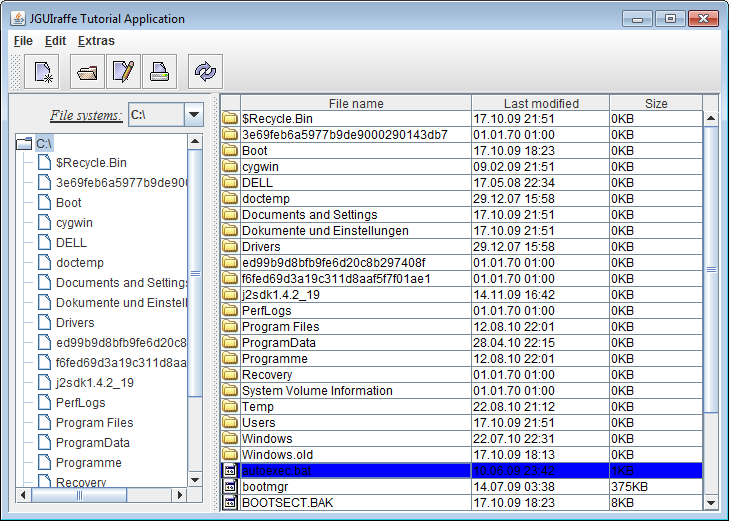
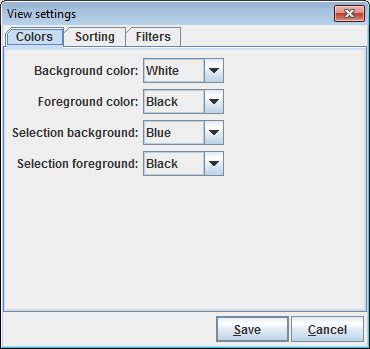

In the source code repository, next to the code of the actual library, there is a module with sample code. It is named examples. The major part of this module consists of an example application demonstrating many of the features offered by the JGUIraffe library. This section describes the tutorial application. It is intended to be an extension of the user's guide. While the user's guide provides a whole lot of background information, this document is more focused on practical things. It can also be used to get a quick jump start into development with the JGUIraffe library.
The tutorial application is not designed to be used as a productive tool. Rather, its goal is to demonstrate typical programming practices working well with the JGUIraffe library. This manifests itself in the fact that many features - especially "dangerous" operations like removing files - have not been implemented. As problem domain a file system browser application was chosen. The following screenshot shows the main window of the application:
The application follows typical UI conventions of directory browsing tools. The main panel (below the menu and the tool bar) is split into two areas. On the left hand site there is a combo box allowing the user to select a root file system. On Windows systems it contains the drive letters available. Below the combo box there is a tree view component displaying the directory structure of the file system currently selected. On the right hand site there is a table showing the content (the sub directories and files) of the directory selected in the tree view on the left.
From the tool bar or the main menu some operations can be triggered to do something with the file(s) selected. The availability of these operations depends on the current selection. For instance, a group of actions is active only if a single file is selected. When selecting the View settings... menu item from the Extras menu a dialog window pops up allowing the definition of view-related properties for the current directory:
Using this dialog window many details of the display of the current directory can be specified, for instance colors, the sorting of the files and sub directories, and filter conditions. The settings entered in this dialog window are saved in a file in the directory so that they can be applied whenever the user navigates to this directory.
An action File new available from both the main menu and the tool bar allows the creation of a new file. It displays a dialog window in which the user can enter a file name and text content of the file. Closing this window with the OK button creates such a file in the current directory. This dialog window and the builder script which defines it is also subject of the chapter A complete builder script of the user's guide.
There is another action which demonstrates dealing with long-running operations: If Extras / Long operation is selected, a dialog window appears which allows the configuration of a dummy background task - mainly the duration of the task in seconds can be entered using a slider control. When the dialog window is closed the task runs in the background (it does nothing useful), and another window is displayed showing the progress of the task.
A JGUIraffe application requires a minimum set of files in order to successfully launch it and to configure the framework. Of course, these files are present for the tutorial application, too. We provide an overview over these files here. This is especially useful for the impatient readers, so they can start with their own experiments.
Each Java application needs a startup class, i.e. a class containing a main() method. A JGUIraffe application does not strictly require a custom startup class because the Application class comes with a main() method which can be used out of the box. However, providing an application-specific startup class can simplify some things, e.g. the definition of launch configurations in an IDE. If the application supports command line arguments, a custom startup class is also required. For these reasons the tutorial application comes with its own startup class, but with a very simple one. It is derived from Application and just calls the corresponding method to get the framework running:
package net.sf.jguiraffe.examples.tutorial;
import net.sf.jguiraffe.gui.app.Application;
import net.sf.jguiraffe.gui.app.ApplicationException;
public class Main extends Application
{
/**
* The main method of the application. Starts the whole application.
* @param args command line arguments
*/
public static void main(String[] args) throws ApplicationException
{
startup(new Main(), args);
}
}
You may wonder how the framework knows which main window to display. The startup class does not contain any information about this. The answer is that this information is obtained from the application's configuration. JGUIraffe uses Apache Commons Configuration to manage configuration data. So a configuration file compatible with this library has to be created. Actually, two configuration files are needed: One file is a description file listing several configuration sources. This file is named config.xml per default and is searched in the class path. The other file contains the actual configuration of the JGUIraffe framework; it is referenced from the first file. The config.xml file looks as follows for the tutorial application:
<?xml version="1.0" encoding="ISO-8859-1"?>
<configuration>
<system config-name="system-config"/>
<xml config-name="userConfig" fileName="${user.home}/.jguiraffe-testappconfig.xml"
config-optional="true" config-forceCreate="true"/>
<additional>
<xml fileName="framework-config.xml"/>
</additional>
</configuration>
Here, in the section wrapped by the <additional> tags the actual configuration file for the framework - in this case named framework-config.xml - is defined. The other elements integrate some other configuration sources (which are useful, but not required for an application):
<?xml version="1.0" encoding="ISO-8859-1"?>
<config>
<framework>
<builder>
<mainScript>main.jelly</mainScript>
<beandefinitions>
<beandefinition>tutorial-beans.jelly</beandefinition>
</beandefinitions>
</builder>
<appctx>
<defaultResourceGroup>tutorial-resources</defaultResourceGroup>
</appctx>
<storeuserconfig>true</storeuserconfig>
<userconfigname>userConfig</userconfigname>
</framework>
</config>
The most important piece of information is the name of the builder script defining the application's main window. It is defined by the <mainScript> element. The other elements configure some useful but optional functionality of the framework. We give a short overview over these elements:
This is basically all what is needed for a working JGUIraffe application. Well, of course, the main builder script referenced by the framework configuration file must also exist; this is highly specific to a concrete application.
Applications that use resources to translate texts will also ship with a set of resource properties files (provided that the default resource manager implementation is used which obtains resource texts from properties files). The tutorial application belongs to this group of applications. Its base resource bundle is named tutorial-resources.properties. (Note that the name matches the default resource group specified in the framework configuration. In the case of the default resource manager a resource group corresponds to a resource properties file. The properties file for the default language does not have an extension; the file with the German translations is named tutorial-resources_de.properties.)
Before we start with the actual exploration of the tutorial application we will have to say some words about its package structure. There are multiple reasonable ways of packaging a UI application. For instance, classes could be grouped together in packages by their type. So you would end up with packages for model classes, controller classes, view classes, helper classes, etc. This is a valid packaging scheme, and it can be applied to JGUIraffe applications.
The tutorial application uses a different approach. It groups its classes by functionality. This means that there are packages related to the main UI elements (the main frame and the dialog windows) used by the application. (There is also a package with shared classes used by multiple windows.) This way of packaging is also suitable for JGUIraffe applications. The programming model of this framework typically leads to multiple small classes implementing specific functionality like event handling or task execution. View classes are not needed because views are defined in builder scripts. In many cases you do not even have a controller class because the default implementation of the framework is sufficient. So it makes sense to bundle the classes that implement logic for a specific window in a common package. By the way, these small and focused classes are much easier to unit test than large, monolitic view classes with lots of nested anonymous event listener classes.
The classes related to the application's main frame are all located in the net.sf.jguiraffe.examples.tutorial.mainwnd package. In addition to the main controller class, MainWndController, the package contains a bunch of helper classes, e.g. for processing events or for serving as model objects for UI elements. The frame window itself is constructed from the builder script main.jelly which can be found in the src/main/resources directory. (This is the maven default directory for non-Java files which have to be added to the generated jar. Here all builder scripts, configuration files and resource bundles are stored.)
MainWndController is responsible for most of the logic of the main frame window. This is different from typical controller implementations for dialog windows: a dialog window is mainly concerned with gathering data from the user and processing the results. The application's main frame window serves a different purpose. Therefore the controller class is very specific to the logic of the application. It is not associated with the frame in the usual way, and it does not extend the controller base class defined by the JGUIraffe framework (which is focused on dialog windows). The association between the controller object and the UI is done by the dependency injection framework. The controller is passed references to all UI elements it has to interact with. Analogously, all helper objects (e.g. event listeners) which have to call back the controller are passed a reference to it. The helper objects are very simple: they store a reference to the controller and call a corresponding method when they are triggered. Thus the view logic for handling the interaction between the UI elements can be implemented centrally in the MainWndController class.
The main.jelly builder script is a bit more complex than scripts defining dialog windows because it is also responsible for the application's main menu, its tool bar, and the actions representing menu items and/or tool bar buttons. These action declarations make up a large section in the builder script. Another big part defines the UI of the window: the combo box for the file system, the tree view with the directory tree, and the table with the current directory's content. The remaining parts define helper objects and plug them together.
MainWndController is notified when the selection of the combo box with the root file systems changes. This is done by the FileSystemChangeListener class. In response of this event the controller has to update the tree view so that it shows the content of the newly selected file system. As the tree view's model a HierarchicalConfiguration object from the Apache Commons Configuration library is used. A configuration node in this model object represents a node that is displayed by the tree view. The controller stores the configuration nodes associated with root file elements. So it can detect whether it already has loaded data for a file system or whether it has to load this data now. In any case the model of the tree view is manipulated so that it points to the data of the newly selected file system.
The controller also has to be notified about changes in the selection of the tree view. When the user navigates the tree the corresponding directory has to be displayed in the table. Because a whole file system can become pretty huge, the controller does not load it at once. Rather, only a single layer (a directory with its files and subdirectories) is loaded. If a directory is selected whose content has not yet been loaded, the controller executes a command of type ReadDirectoryCommand in the background. The command reads the content of the directory and performs the corresponding sort and filter operations. On completion of the command the model of the tree view is updated. The configuration nodes forming the tree's model are associated with objects of type DirectoryData from the model package. They contain the data required for the display of a directory. Such an object is determined during the processing of the selection changed event of the tree view - either it has already been present in the model or it has just been created by a ReadDirectoryCommand. It is then used to populate the table.
The data model of the table is a plain java.util.ArrayList. It is filled from the data of the DirectoryData object obtained from the tree view's model. Actually, the list contains objects of type net.sf.jguiraffe.examples.tutorial.model.FileData, a simple wrapper around a java.io.File object. The table is configured to display the single properties of such FileData objects. With the FileSizeTransformer class there is a special transformer implementation applied to the column with the file size: it displays the size in kilo bytes.
The classes implementing the view settings dialog are located in the net.sf.jguiraffe.examples.tutorial.viewset package; the builder script defining the dialog window is named viewsettings.jelly. While the main frame demonstrates usage of some of the advanced UI elements like trees and tables, the view settings dialog contains various types of simple controls, e.g. radio buttons, checkboxes, or input elements for other data types like numbers or dates.
The view settings dialog is a typical dialog window whose purpose is to enter data. Therefore the base classes provided by the JGUIraffe library for forms and controllers can be used. Because the UI has some dynamic aspects, there is a custom controller implementation named ViewSettingsFormController derived from the base class FormController. This controller class has the task to control the enabled state of some input elements which depent on the state of other elements. This is achieved by registering the controller object as listener for change events at the checkbox elements defined in the UI (registration is performed in a declarative way by tags in the builder script). These checkboxes are connected to input elements; the input elements are only enabled if the checkbox is selected. Therefore, when a change event is received, the controller determines the affected checkbox from the event's properties and obtains its selection state. It then maps the name of the checkbox to a component group and sets the enabled state of this group accordingly. The UI has been defined in a way that there are component groups for the elements which depend on checkboxes. So it is easy to find the elements affected by a change of a checkbox and to manipulate their state.
When the user closes the view settings dialog by clicking the OK button a command of type CreateViewSettingsCommand is executed. It creates a file in the current directory and stores the settings the user has entered in the dialog window in it. To do this the command needs some data:
Applications sometimes have the requirement to execute a task which may take a while. In such cases it is good practice to give the user some feedback about what is going on. A good choice for this purpose is a dialog window with a progress indicator. If possible, a cancel button can be provided which allows the user to cancel the operation.
The tutorial application defines an action that simulates such a long-running task. The implementation demonstrates how standard means provided by JGUIraffe can be used to implement a dialog window for visual feedback. The corresponding classes can be found in the net.sf.jguiraffe.examples.tutorial.bgtask package, there is also builder script named bgtask.jelly.
The builder script is a little bit special because it defines two dialog windows at once. The main dialog window is directly opened when the user selects the action for the long-running task. It presents some options for the configuration of the task - mainly the user can specify the duration using a slider control. (Note: There is also a checkbox which controls whether visual feedback is enabled, but this is only for testing purposes. A real application should probably always provide feedback. Actually, disabling visual feedback is used to test the behavior of the application if it is to be terminated and there is still a background task running. You can try what happens then.)
When closing the configuration dialog with OK an instance of the BgTaskCommand class is executed. This object is passed some references to helper and data objects via dependency injection:
At the beginning of its execute() method the command class opens the dialog window for the feedback of the operation. Then it simulates a long-running operation. This is done in a loop which sleeps for one second until the duration specified by the user is reached. In each iteration the current progress rate is calculated, and the progress indicator is updated correspondingly. Because the command runs in a background thread the GUISynchronizer has to be used for this purpose.
After completion of the execute() method the performGUIUpdate() method is called automatically in the event dispatch thread. Here the feedback dialog window is closed.
The command class also implements the FormActionListener interface and is registered as action listener at the Cancel button of the feedback dialog (via an <a:eventListener> tag in the builder script). So it gets notified when the user wishes to cancel the operation. In this case the Cancel button is disabled - to show the user that the click was recognized -, and a flag is set which causes the main loop of the command to terminate.
What is only simulated by the BgTaskCommand class can be transferred to real world use cases. The handling of the dialog window for the feedback of the operation can be done in a similar way. Then the task to be performed has to be broken down into several steps so that the progress indicator can be updated in a meaningful way. Listening to a cancel button and terminating the operation on demand is probably desired in most cases, too.
Note that for this kind of operations the feedback dialog is an essential implementation element. It does not only show the progress of the operation but also blocks the UI (it is a modal dialog) and prevents the user to trigger further actions. This is desired because in many use cases the user should not be allowed to start multiple background tasks in parallel which may conflict with each other. In JGUIraffe applications it is per default not possible to start multiple background tasks at once anyway because the command queue is only associated with a single worker thread. So tasks are executed one by one in isolation. If an application really needs a task that should run in the background independent from all other tasks of the application, it has to start a separate thread manually.